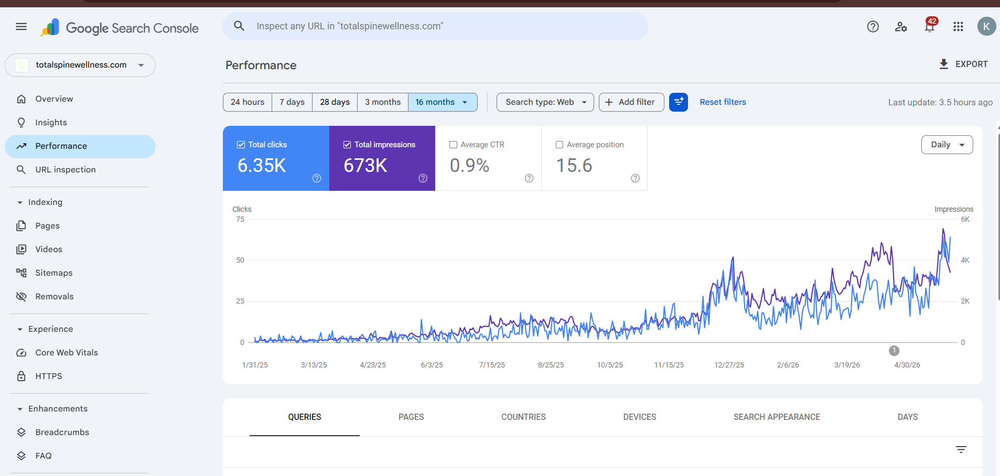

A full SEO strategy for a new U.S. regenerative spine and pain treatment website, built from launch with SEO architecture, content systems, technical SEO, on-page optimization, and backlink acquisition.
Organic Clicks
Search Impressions
Average Position
Target Market
I worked on Total Spine Wellness from the moment the website was created. This meant the SEO strategy was not added after launch — it was planned from the beginning.
I guided the developer on the website structure, service hierarchy, content direction, keyword targeting, and SEO foundation needed to support long-term organic growth.
My work covered keyword research, technical SEO, on-page SEO, content creation, content optimization, backlink strategy, Google Search Console monitoring, and SEO architecture planning.
Total Spine Wellness was a new website in a highly competitive U.S. healthcare niche. The challenge was to build visibility from zero while competing in search topics related to regenerative medicine, spine care, chronic pain, and non-surgical treatment options.
The goal was not just to grow traffic. The goal was to attract qualified visitors who were actively researching regenerative medicine and spine-related treatment options, then turn that traffic into real patient inquiries.
The strategy was built around creating an SEO foundation from the start, then expanding visibility through consistent content production and service-page optimization.
Content was a major part of the growth strategy. I published around three articles per week to build topical authority around regenerative medicine, disc regeneration, spine care, stem cell therapy, PRP therapy, and pain treatment topics.
The content system was designed to support both informational search intent and service-page visibility, helping the website reach users at different stages of the decision-making journey.
I planned the website structure with SEO in mind, helping define which services needed dedicated pages and how content should connect through internal links.
I monitored indexation, crawlability, search performance, and technical SEO signals to make sure Google could understand and process the website properly.
I optimized key pages using search intent, metadata, heading structure, internal links, content depth, and keyword alignment.
I supported the campaign with backlink acquisition to strengthen authority and improve the website’s ability to compete in a difficult healthcare niche.
Total Spine Wellness showed consistent organic growth and began generating real business value through search visibility and qualified patient inquiries.
This screenshot shows Total Spine Wellness search performance, including organic clicks, impressions, and growth from a new SEO foundation.

The strongest result was not only organic traffic growth. The website started bringing in real leads from people searching for regenerative medicine and non-surgical spine treatment options.
This proved that the SEO strategy was attracting relevant users, not just increasing impressions or traffic numbers.
Total Spine Wellness demonstrates how SEO can be built into a website from day one to create a long-term organic growth engine.
By combining SEO architecture, content strategy, technical SEO, on-page optimization, backlink acquisition, and performance monitoring, the website started building visibility and generating qualified leads in a competitive U.S. healthcare market.
If you want to grow organic visibility, rank for high-intent keywords, and turn your website into a lead generation channel, let’s talk.